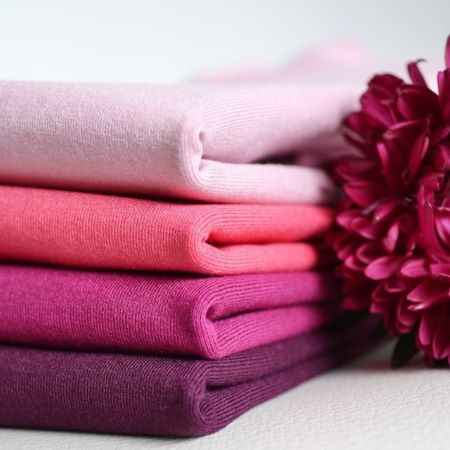

Itse tehty pyykkietikka on edullinen lahja, joka tulee varmasti käyttöön, eikä jää nurkkiin pölyttymään pitkäksi aikaa.
Pyykkietikka raikastaa pyykin ja pesukoneen, poistaen tunkkaisen hajun. Sitä käytetään huuhteluaineen sijaan.

Tarvikkeet
Etikka (tavallinen väkiviinaetikka käy hyvin)
Vesi
Eteerinen öljy (valinnainen)
Tyhjä pullo tiiviillä korkilla
Lisäksi
Desimitta
Suppilo
Toimi näin
1. Mittaa tyhjään pulloon etikkaa ja vettä suhteessa 4:1.
- Esim. jos teet pyykkietikkaa 5dl pulloon, laita 4dl etikkaa ja 1dl vettä.
2. Jos haluat puhtaaseen pyykkiin hennon tuoksun, voit lisätä eteeristä öljyä.
- Itse laitan n.20 tippaa per puoli litraa pyykkietikkaa, mutta tämä on makuasia. Mieleisesi määrä löytyy kokeilemalla.
Käyttöohje:
Annostele pyykkietikkaa 30-40ml pesukoneen huuhteluainelokeroon huuhteluaineen tilalle. Pese vaatteet normaalisti.
Vinkkejä
Lasipullo sopii pyykkietikalle mainiosti. Se on lisäksi juhlava ja kierrätettävä.
Koristele pullo esimerkiksi kankaisella rusetilla tai itse tehdyllä etiketillä.
Pyykkietikan ympärille on helppo rakentaa isompikin lahja. Anna lisäksi vaikkapa pyyhkeitä, kestovanulappuja tai shottilasi pyykkietikan annostelua varten.
Etikka saattaa hieman tuoksua vaatteissa, kun ne otetaan märkinä pesukoneesta. Etikkainen tuoksu häviää, kun vaatteet kuivuvat.